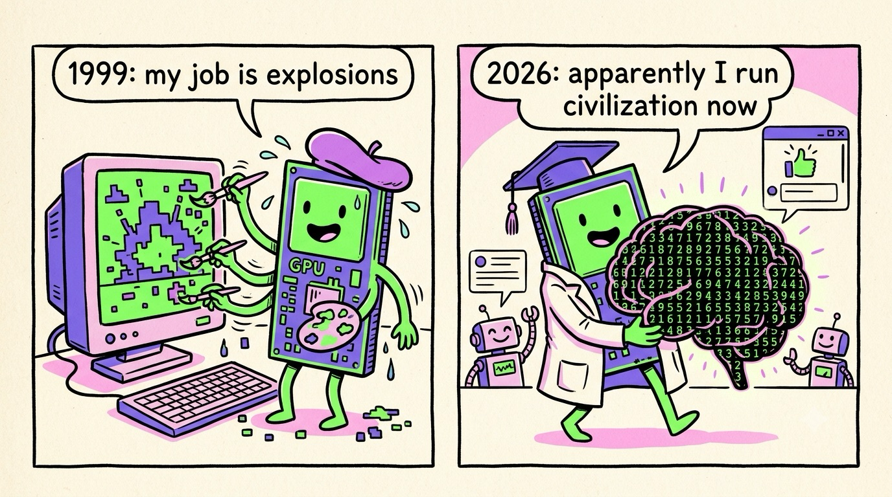

Chapter 01 · The Big Picture
Why GPUs Run the Modern World
Here's a fun fact to open with: the chip that was invented so video-game explosions would look cooler is now the chip that trains ChatGPT, folds proteins, forecasts the weather, and powers the AI agents that write code. That was not the plan. Nobody in 1999 said "let's build the engine of artificial intelligence." They said "let's draw a lot of triangles, fast." This book is the story of why drawing triangles fast turned out to be one of the most important ideas in computing.
A GPU is a machine for doing the same simple operation on millions of pieces of data at once. Pixels, matrix cells, neural-network weights — the GPU doesn't care what the data means. If your problem looks like "do this little thing a million times, and the million things don't depend on each other," a GPU will crush it.
What does a GPU actually do?
Let's start with the original job. Your screen is a grid of pixels — a laptop at 1920×1080 has about 2 million of them. A game running at 60 frames per second has to decide the color of every one of those pixels 60 times a second. That's 124 million pixel decisions per second, and each decision involves real math: which triangle covers this pixel? What texture is on it? How does the light hit it?
Here's the key observation: pixel #1,000,000 doesn't need to know anything about pixel #1,000,001. Every pixel can be computed independently. So instead of one brilliant processor working through pixels one at a time, you can throw thousands of simple processors at the screen and compute thousands of pixels simultaneously. That's the entire founding insight of the GPU — the Graphics Processing Unit.

A funny zine-style cartoon comic strip in 2 panels, hand-drawn ink style with flat colors (electric green, violet, pink on cream paper). Panel 1: a cheerful rectangular GPU chip character wearing a painter's beret, furiously painting millions of tiny pixels onto a video game screen showing a blocky explosion, sweat drops flying, caption bubble "1999: my job is explosions". Panel 2: the same GPU character now wearing a graduation cap and lab coat, carrying a giant glowing brain made of matrix numbers, with tiny robots and a chat window cheering, caption bubble "2026: apparently I run civilization now". No small unreadable text. Target size ~1280×720px, 16:9 landscape; composed for a small on-page figure, subject centred with safe margins — it is letterboxed into a 16:9 box, so keep nothing important near the edges.
Generate this with your image agent, then drop the file here.
The accidental AI machine
Now here's the plot twist. Around 2012, machine-learning researchers noticed something: training a neural network is also "do the same simple math on millions of numbers." A neural network is mostly giant grids of numbers (matrices) being multiplied together, over and over. Multiplying matrices means doing millions of little multiply-and-add operations — and none of them depend on each other. Sound familiar? It's pixels all over again.
In 2012, a network called AlexNet won the biggest image-recognition competition in the world by a landslide — trained not on a supercomputer, but on two consumer gaming GPUs (GTX 580s) in a grad student's machine. That result kicked off the deep-learning era, and the GPU has been the engine of AI ever since.
Where GPUs are hiding in your day
Once you know the pattern — "same operation, tons of independent data" — you start seeing GPU work everywhere:
- Every message to an AI assistant. When you chat with an LLM, a GPU (usually a rack of them) multiplies your words through hundreds of billions of weights to pick each next token. An agent that browses, writes code, and calls tools is doing this thousands of times per task.
- Games and phones. Rendering, obviously — but also AI upscaling (DLSS-style tricks), where a small neural network invents extra pixels and frames so games run faster.
- Science. Weather forecasting, drug discovery, protein folding (AlphaFold), simulating galaxies — all "same math, millions of data points."
- Video calls, photo filters, self-driving cars — image pixels in, neural nets in the middle, decisions out.
The reason AI companies are spending billions of dollars on GPUs isn't hype for a specific brand of chip. It's that neural networks and GPUs are shaped like each other: one is a pile of independent multiply-adds, the other is a machine for doing independent multiply-adds. When a problem and a machine fit this well, the machine wins the era.
What you'll be able to do after this book
I'm going to treat you the way I'd treat a sharp intern: no hand-waving, no "it's magic," but also no drowning in jargon. By the last page you'll be able to:
- Explain why a GPU with thousands of "weak" cores beats a CPU with 16 "strong" cores at some jobs — and loses badly at others (Ch. 2–3).
- Read and understand a real CUDA kernel — the actual code people write for GPUs (Ch. 4).
- Explain why memory, not math, is usually the real bottleneck (Ch. 5, 8).
- Trace a triangle through the graphics pipeline (Ch. 6) and a token through an LLM (Ch. 8).
- Understand Tensor Cores, FP8/FP4 precision, and why AI GPUs are measured in "petaFLOPS" (Ch. 7).
- Know how thousands of GPUs are wired into one giant computer (Ch. 9), and how you can get your hands on GPU power for free today (Ch. 10).
The most common beginner misconception, worth killing on page one: a GPU is not a faster CPU. For most everyday code — loading a webpage, running Python line by line — a single GPU core is dramatically slower than a CPU core. The GPU only wins when you can keep thousands of its cores busy at once. The whole art of GPU computing is arranging your problem so that's true.
Let's start with that comparison properly: what exactly is the difference between a CPU and a GPU? Turn the page — I'll explain it with a restaurant.
Sources NVIDIA, "CUDA Refresher" & CUDA Programming Guide (developer.nvidia.com) · Krizhevsky, Sutskever & Hinton, "ImageNet Classification with Deep CNNs" (2012) · Tom's Hardware GPU history & benchmarks (tomshardware.com)